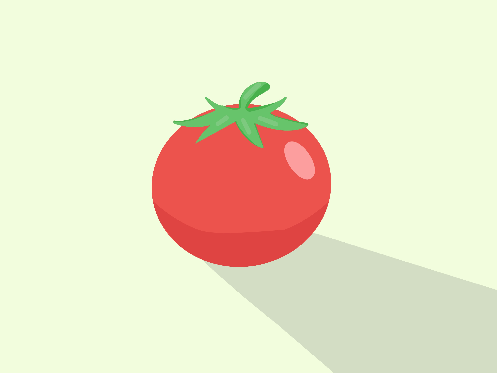

Pomodoro Timer
Qtd. de pomodori:
0
Como funciona
Pomodoro significa tomate em italiano e faz referência ao tempo durante o qual você pode fazer determinada tarefa.
Ao clicar no botão iniciar, você acionará a contagem de 25 minutos para realizar uma tarefa.
Ao terminar a contagem, você terá finalizado um pomodoro, que será adicionado na quantidade de pomodori.
Então, o tempo de descanso de 5 minutos será automaticamente acionado.
Ao completar duas horas (4 pomodori), é acionado um tempo de descanso de 30 minutos e o ciclo é concluído.
Fechar
Iniciar Timer
Tempo restante para sua tarefa:
0 minutos 0 segundos
Tempo de Descanso:
0 minutos 0 segundos
Tempo de Descanso Extra! Descanse 30 minutos!
Fechar